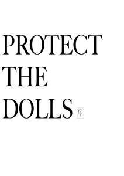
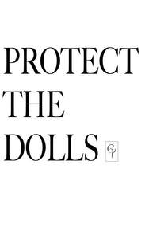
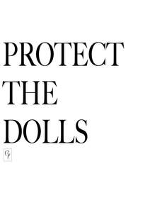
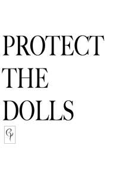

Trade Mark Journal No.2025/030 25 July 2025
UK00004233607 14 July 2025 (3,9,14,16,18,20,21,25,26,35)
Mark 1

Mark 2

Mark 3
Mark 4

Mark 5

- Class 3
- Non-medicated cosmetics and toiletry preparations; non-medicated dentifrices; perfumery, essential oils; bleaching preparations; laundry preparations; cleaning, polishing, scouring and abrasive preparations; soaps; eau de toilette, eau de parfum, eau de cologne, cologne; essential oils; aromatherapy oils; cosmetics; hair lotions; body deodorants and antiperspirants; hair conditioners; hair shampoos; depilatories; artificial eyelashes; artificial nails; hair bleach; hair colourants; temporary tattoos for cosmetic purposes; make-up; nail varnish; fragrance for household purposes; body creams; body lotions; body scrubs; beauty care preparations; preparations for cleaning teeth; cosmetic preparations for the care of mouth and teeth; facial masks.
- Class 9
- Apparatus for recording, transmission or reproduction of sound or images; sound and video recordings; films bearing video recordings; music cassettes, vinyl records; blank analogue recording media; compact discs, DVDs and other digital recording media; downloadable podcasts; downloadable ringtones; downloadable publications; electronic publications; interactive electronic publications; computer software; application software; computer games software; sunglasses; eyeglasses; cases for sunglasses; eyeglasses; cases for mobile phones; smartwatches; mobile phones; pedometers; decorative magnets.
- Class 14
- Precious metals and their alloys; jewellery; precious and semi-precious stones; paste jewellery (costume jewellery); pins (jewellery); shoe jewellery; rings (jewellery); earrings; necklaces [jewellery]; chokers; pendants; bracelets (jewellery); bangles; badges of precious metal; jewellery brooches; tie clips; tie bars; cuff links; jewellery charms; horological and chronometric instruments; clocks; watch straps; watches; jewellery boxes; key rings; leather key fobs; metal key fobs; charms for key chains; charms for key rings; key rings [split rings with trinket or decorative fob]; key chain tags; key holders; lanyards for holding keys.
- Class 16
- Printed matter and printed publications; posters, books, song books; fan magazines; travel magazines; music magazines; general feature magazines; leaflets; brochures; journals [publications]; event programmes; autograph books; flyers; stickers; sheet music; bookbinding material; photographs; stationery; works of art of paper and cardboard; papier mache figurines; architects' models; teaching material (except apparatus); cardboard packaging; cardboard packaging containers; packaging materials of paper; paper napkins; stickers; printers' type; printing blocks; money clips; sandwich bags; paper bags; printed luggage labels.
- Class 18
- Leather and imitations of leather; animal skins and hides; luggage and carrying bags; umbrellas and parasols; walking sticks; collars, leashes and clothing for animals; chain mesh purses; frames for umbrellas or parasols; handbag frames; net bags for shopping; umbrella covers; umbrella handles; umbrella or parasol ribs; umbrella rings; umbrella sticks; walking cane handles; purses; coin purses; wallets; handbags; luggage tags; suitcases; rucksacks; backpacks; bags; sports bags; school bags; shopping bags; canvas shopping bags; holdalls; toiletry bags sold empty; make-up bags; flight bags; beach bags; trunks and travelling bags; vanity cases sold empty.
- Class 20
- Furniture, mirrors, picture frames; containers, not of metal, for storage or transport; unworked or semi-worked bone, horn, whalebone or mother-of-pearl; shells; meerschaum; yellow amber; figurines of wood, wax, plaster or plastic; works of art of wood, wax, plaster or plastic; mannequins; garden furniture; indoor blinds; pillows; cushions; beds; beds for pets; sleeping mats.
- Class 21
- Household or kitchen utensils and containers; cookware and tableware, except forks, knives and spoons; cosmetic utensils; combs and sponges; brushes, except paintbrushes; articles for cleaning purposes; glassware, porcelain and earthenware; money boxes; toothbrushes; combs; hair brushes; plastic water bottles sold empty; shoe horns; soap dispensers; vases; bowls; paper plates; paper cups; plastic cups; figurines made of porcelain; ceramic vases; ceramic bowls; ceramics pots; ceramic sculptures; ceramic ornaments; crystal ornaments; crystal [glassware]; terracotta flower pots; glass beverageware; glass figurines; glass bowls; glass candlesticks; works of art made of porcelain; gloves for gardening; perfume bottles; perfume sprayers; perfume burners; perfume bottles; perfume sprayers; perfume vaporizers; baking containers; household containers; kitchen containers; soap containers; household containers for foods; drinking vessels; vases; candlesticks; plant pots.
- Class 25
- Clothing, footwear, headgear; fancy dress costumes; costumes for use in children's dress up play; sleep masks; belts [clothing]; collars [clothing].
- Class 26
- Lace and embroidery, ribbons and braid; buttons, hooks and eyes, pins and needles; artificial flowers; hair decorations; decorative charms for eyewear; false hair; buttons; artificial fruit; badges for wear, not of precious metal; hair clips; beads other than for making jewellery; birds' feathers (clothing accessories); bobbins for retaining embroidery floss or wool (not parts of machines); bodkins; boxes for needles; brassards; brooches (clothing accessories); collar supports; competitors' numbers; darning lasts; heat adhesive patches for repairing textile articles; expanding bands for holding sleeves; false beards; false moustaches; feathers (clothing accessories); hair colouring caps; hair curlers, electric and non-electric, other than hand implements; hair curling papers; hair curling pins; hair extensions; bobby pins; hair nets; hair ornaments; hair pins; hat trimmings; heat adhesive patches for repairing textile articles; needle cases; needle cushions; numerals for marking linen; ostrich feathers (clothing accessories); pin cushions; plaited hair; hair scrunchies; sewing boxes; sewing thimbles; shoe trimmings; shoulder pads for clothing; shuttles for making fishing nets; spangles for clothing; top-knots (pompoms); toupees; trouser clips for cyclists; wigs; artificial flowers; artificial plants other than Christmas trees; artificial fruit.
- Class 35
- Advertising; business management; business administration; office functions; wholesale and retail services connected with the sale of non-medicated cosmetics and toiletry preparations, non- medicated dentifrices, perfumery, essential oils, bleaching preparations, laundry preparations, cleaning, polishing, scouring and abrasive preparations, soaps, eau de toilette, eau de parfum, eau de cologne, cologne, essential oils, aromatherapy oils, cosmetics, hair lotions, body deodorants and antiperspirants, hair conditioners, hair shampoos, depilatories, artificial eyelashes, artificial nails, hair bleach, hair colourants, temporary tattoos for cosmetic purposes, make-up, nail varnish, fragrance for household purposes, body creams, body lotions, body scrubs, beauty care preparations, preparations for cleaning teeth, cosmetic preparations for the care of mouth and teeth, facial masks, industrial oils and greases, wax, lubricants, dust absorbing, wetting and binding compositions, fuels and illuminants, candles and wicks for lighting, candles, perfumed candles, tealight candles, pharmaceuticals, medical and veterinary preparations, plasters, sanitary preparations for medical purposes, dietetic food and substances adapted for medical or veterinary use, food for babies, dietary supplements, vitamin supplements, vitamin preparations, dietetic preparations adapted for medical use, dietary and nutritionally fortified food products adapted for medical use, dietary supplement drinks, protein dietary supplements, food supplements, hand tools and implements, hand-operated, cutlery, razors, gardening trowels, gardening shears, gardening scissors, hair cutting scissors, hair clippers, electric hair crimpers, hair braiders, electric, curlers, hand implements, electrical hair straightening irons, cuticle nippers, cuticle tweezers, emery boards, emery files, nail scissors, nippers, cake cutters, pizza cutters, scissors for kitchen use, apparatus for recording, transmission or reproduction of sound or images, sound and video recordings, films bearing video recordings, music cassettes, vinyl records, blank analogue recording media, compact discs, DVDs and other digital recording media, downloadable podcasts, downloadable ringtones, downloadable publications, electronic publications, interactive electronic publications, computer software, application software, computer games software, sunglasses, eyeglasses, cases for sunglasses, eyeglasses, cases for mobile phones, smartwatches, mobile phones, pedometers, decorative magnets, surgical, medical, dental and veterinary apparatus and instruments, body massagers, sex toys, massage apparatus, apparatus, devices and articles for nursing infants, babies' bottles, ear plugs (ear protection devices), feeding bottle teats, feeding bottle valves, hearing protectors, dummies for babies, teething rings, apparatus for lighting, heating, steam generating, cooking, refrigerating, drying, ventilating, water supply and sanitary purposes, electric torches, head torches, rechargeable torches, light diffusers, LED mood lights, hair driers, lamps, lighting fixtures, string lights, fairy lights, LED lights, book lights, bicycle lights, garden lighting, vehicles, apparatus for locomotion by land, air or water, bicycles, babies' buggies, baby carriages [prams], baby strollers, covers for baby strollers, hoods for baby strollers, parasols to be affixed to baby strollers, pushchairs, children's bicycles, folding bikes, mountain bicycles, electric bicycles, go-karts, hand cars, push scooters [vehicles], motor scooters, electrically powered scooters (vehicles), shopping trolleys, precious metals and their alloys, jewellery, precious and semi-precious stones, paste jewellery (costume jewellery), pins (jewellery), shoe jewellery, rings (jewellery), earrings, necklaces [jewellery], chokers, pendants, bracelets (jewellery), bangles, badges of precious metal, jewellery brooches, tie clips, tie bars, cuff links, jewellery charms, horological and chronometric instruments, clocks, watch straps, watches, jewellery boxes, key rings, leather key fobs, metal key fobs, charms for key chains, charms for key rings, key rings [split rings with trinket or decorative fob], key chain tags, key holders, lanyards for holding keys, printed matter and printed publications, posters, books, song books, fan magazines, travel magazines, music magazines, general feature magazines, leaflets, brochures, journals [publications], event programmes, autograph books, flyers, stickers, sheet music, bookbinding material, photographs, stationery, works of art of paper and cardboard, papier mache figurines, architects' models, teaching material (except apparatus), cardboard packaging, cardboard packaging containers, packaging materials of paper, paper napkins, stickers, printers' type, printing blocks, money clips, sandwich bags, paper bags, printed luggage labels, leather and imitations of leather, animal skins and hides, luggage and carrying bags, umbrellas and parasols, walking sticks, collars, leashes and clothing for animals, chain mesh purses, frames for umbrellas or parasols, handbag frames, net bags for shopping, umbrella covers, umbrella handles, umbrella or parasol ribs, umbrella rings, umbrella sticks, walking cane handles, purses, coin purses, wallets, handbags, luggage tags, suitcases, rucksacks, backpacks, bags, sports bags, school bags, shopping bags, canvas shopping bags, holdalls, toiletry bags sold empty, make up bags, flight bags, beach bags, trunks and travelling bags, vanity cases sold empty, furniture, mirrors, picture frames, containers, not of metal, for storage or transport, unworked or semi-worked bone, horn, whalebone or mother-of-pearl, shells, meerschaum, yellow amber, figurines of wood, wax, plaster or plastic, works of art of wood, wax, plaster or plastic, mannequins, garden furniture, indoor blinds, pillows, cushions, beds, beds for pets, sleeping mats, household or kitchen utensils and containers, cookware and tableware, except forks, knives and spoons, cosmetic utensils, combs and sponges, brushes, except paintbrushes, articles for cleaning purposes, glassware, porcelain and earthenware, money boxes, toothbrushes, combs, hair brushes, plastic water bottles sold empty, shoe horns, soap dispensers, vases, bowls, paper plates, paper cups, plastic cups, figurines made of porcelain, ceramic vases, ceramic bowls, ceramics pots, ceramic sculptures, ceramic ornaments, crystal ornaments, crystal [glassware], terracotta flower pots, glass beverageware, glass figurines, glass bowls, glass candlesticks, works of art made of porcelain, gloves for gardening, perfume bottles, perfume sprayers, perfume burners, perfume bottles, perfume sprayers, perfume vaporizers, baking containers, household containers, kitchen containers, soap containers, household containers for foods, drinking vessels, vases, candlesticks, plant pots, textiles and substitutes for textiles, household linen, bed and table covers, cloth bunting, textile flags, textile banners, mats (coasters) of textile, throws, blankets for outdoor use, bed blankets, sleeping bags, towels made of textile materials, curtains, textile wall hangings, printed fabrics, bed linen, quilts, quilt covers, bed spreads, bed sheets, handkerchiefs made of textile, wall hangings of textile, textile kitchen towels, furnishing and upholstery fabrics, curtains, towels, blankets made of textile materials, coverlets, bed covers, pillow cases, cushion covers, clothing, footwear, headgear, fancy dress costumes, costumes for use in children's dress up play, sleep masks, belts [clothing], collars [clothing], lace and embroidery, ribbons and braid, buttons, hooks and eyes, pins and needles, artificial flowers, hair decorations, decorative charms for eyewear, false hair, buttons, artificial fruit, badges for wear, not of precious metal, hair clips, beads other than for making jewellery, birds' feathers (clothing accessories), bobbins for retaining embroidery floss or wool (not parts of machines), bodkins, boxes for needles, brassards, brooches (clothing accessories), collar supports, competitors' numbers, darning lasts, heat adhesive patches for repairing textile articles, expanding bands for holding sleeves, false beards, false moustaches, feathers (clothing accessories), hair colouring caps, hair curlers, electric and non-electric, other than hand implements, hair curling papers, hair curling pins, hair extensions, bobby pins, hair nets, hair ornaments, hair pins, hat trimmings, heat adhesive patches for repairing textile articles, needle cases, needle cushions, numerals for marking linen, ostrich feathers (clothing accessories), pin cushions, plaited hair, hair scrunchies, sewing boxes, sewing thimbles, shoe trimmings, shoulder pads for clothing, shuttles for making fishing nets, spangles for clothing, top-knots (pompoms), toupees, trouser clips for cyclists, wigs, artificial, flowers, artificial plants other than Christmas trees, artificial fruit, carpets, rugs, mats and matting, linoleum and other materials for covering existing floors, non-textile wall coverings, wallpaper, non-textile wall hangings, games, toys and playthings, video game apparatus, gymnastic and sporting articles, playing cards, decorations for Christmas trees, party balloons, parlour games, party poppers, party blowouts, play balloons, sports balls, exercise balls, baseball gloves, bats for games, ornaments and decorations for Christmas trees, artificial Christmas trees, Christmas crackers, party favours, roller skates, in line skates, flying discs (toys), inflatable pools for recreational use, dolls, toy mobiles, crib mobiles [toys], spinning tops, articles of clothing for toys, children's playthings, baby rattles, baby swings, bathtub toys, bath toys, battery-operated action toys, toy vehicles, bats for games, beach balls, board games, children's playthings, modular toy play houses, toy vehicles, toy masks, crib toys, educational toys, doll costumes, doll clothing, clothing accessories for dolls, doll houses, jack in the boxes, jigsaw puzzles, kites, musical toys, toy models, party favours, parlour games, rocking horses, see saws, stuffed toy animals, meat, fish, poultry and game, meat extracts, preserved, frozen, dried and cooked fruits and vegetables, jellies, jams, compotes, eggs, milk and milk products, oils and fats for food, milk substitutes, cocoa butter, cocoa flavoured milk beverages, prepared seeds, nuts, prepared, soups, soup concentrates, fruit based snack bars, nut based snack bars, seed based snack bars, prepared meals consisting substantially of vegetables, nuts and pulses, prepared meals consisting primarily of meat substitutes, prepared meals consisting primarily of meat, prepared meals consisting primarily of fish, egg substitutes, preparations for making soup, meat substitutes, fruit-based snack food, fruit spreads, vegetable spreads, edible oils and fats, tofu-based snacks, processed fruits, vegetables, nuts, and pulses, fruit salads, vegetable salads, garden salads, prepared, legume salads, tofu, coffee, tea, cocoa and artificial coffee, chocolate, rice, tapioca and sago, flour and preparations made from cereals, bread, pastries and confectionery, tapioca, edible ices, sugar, honey, treacle, yeast, baking-powder, salt, mustard, vinegar, sauces (condiments), spices, ice (frozen water), sweets, ices and ice creams, sorbets [ices], frozen yoghurt, cakes, cake mixes, biscuits, biscuit mixes, edible cake decorations, fruit flavourings, except essences, vanilla flavouring for culinary purposes, flavouring for cakes, other than essential oils, flavourings in the form of concentrated sauces, flavourings in the form of dehydrated sauces, cereal bars, cookies, high-protein cereal bars, flavourings, other than essential oils, for beverages, raw and unprocessed agricultural, aquacultural, horticultural and forestry products, raw and unprocessed grains and seeds, fresh fruits and vegetables, fresh herbs, natural plants and flowers, Christmas trees, bulbs, seedlings and seeds for planting, live animals, foodstuffs and beverages for animals, malt, mineral and aerated waters and other non-alcoholic beverages, fruit beverages and fruit juices, syrups and other preparations for making beverages, coconut water, drinking water, carbonated water, flavoured waters, tonic water, non-alcoholic preparations for making beverages, beers, alcohol-free beer, non-alcoholic cocktails, cider, non-alcoholic, alcoholic beverages (except beer), spirits (beverages), liquers, wine, cider, cocktails, alcoholic essences, alcoholic extracts, anise (liqueur), anisette (liqueur), aperitifs, arak (arrack), bitters, brandy, curacao, distilled beverages, alcoholic beverages containing fruit, kirsch, mead (hydromel), perry, piquette, pre-mixed alcoholic beverages, other than beer- based, rice alcohol, rum, sake, vodka, whisky.
Conner Ives Limited
Representative: Mishcon de Reya LLP